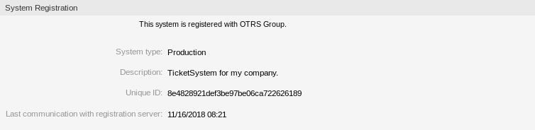

系统注册¶
如果免费试用或注册期限到期，系统将自行锁定。 在这些情况下，您必须注册您的系统，或者您必须延长注册。
使用此屏幕向OTRS集团注册您的系统。 注册屏幕位于 OTRS集团服务*组的 *系统注册 模块中。

未注册的系统屏幕
管理系统注册¶
若要注册您的系统：
- 获得一个 OTRS ID。您必须到 OTRS 门户网站 上注册，注册后就能得到您的 OTRS ID.
- 转到 OTRS集团服务 组的 系统注册 模块，然后输入您的OTRS ID和密码。

系统注册 - 添加OTRS ID
- 点击 下一步 按钮。
- 选择系统类型并输入描述。

系统注册 - 选择系统类型
- 点击 注册 按钮。
- 检查您的注册。

已注册的系统
若要编辑系统注册：
- 点击左侧边栏中的 编辑详情 按钮。
- 修改系统类型和描述。
- 点击 更新 按钮。

编辑系统注册屏幕。
若要显示已传输的数据：
- 点击左侧边栏中的 显示已传输的数据 按钮。
- 以JSON格式查看数据。

传输数据屏幕概览
参见
有关字段的详细说明，请参见 支持数据收集器 一章。
若要概览已注册的系统：
- 单击左侧栏中的 已注册系统概览 按钮。
- 登录到 OTRS 门户网站 。
- 查看已注册系统的列表。
若要取消系统注册：
- 点击左侧边栏的 取消系统注册 按钮。
注解
如果您使用的 STORM powered by OTRS™ 或拥有有效的服务合同，则无法取消注册您的系统。